Unofficial study solution; not an official GTU answer key. Answers have not been independently verified. English text reflows; source equations, diagrams and Gujarati retain their original appearance. Use Enlarge image to inspect them.
આ બિનસત્તાવાર અભ્યાસ ઉકેલ છે, સત્તાવાર GTU જવાબવહી નથી. PDF માંથી ગુજરાતી લખાણ સાચું નીકળતું નથી, તેથી દરેક જવાબ મૂળ ચિત્રરૂપે જાળવ્યો છે. વાંચવા માટે ચિત્ર મોટું કરો. મૂળ પ્રશ્ન અને પરીક્ષાના વિકલ્પોની સૂચનાઓ અનુસરો.
Coverage: all 28 printed parts, including every OR alternative, are answered in English and easy Gujarati. The paper is 70 marks; OR alternatives do not add marks.
Questions: the original states English is authentic. English question wording is reproduced with only whitespace normalised; Gujarati meanings are unofficial study aids.
Methods: diagrams are schematic; conditions, density assumptions and limitations are stated with each answer.
Important: Winter Q3(c) OR: the graph peak depends on interpolation; unusually high densities require checking Gs and the measurements.
Status: unofficial study material, not an official GTU answer key or a design certification. The original question paper is kept unchanged as a separate PDF.
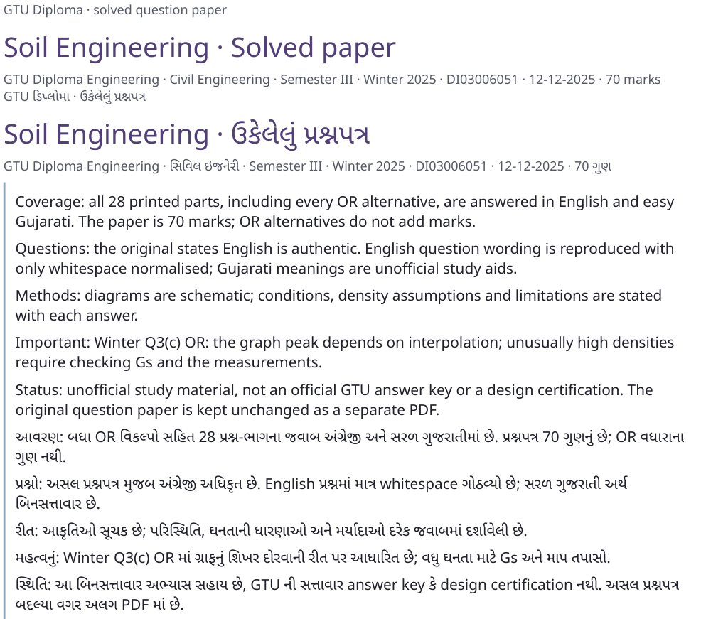
Question 1
Q1 · Soil phases and field density
Q.1 (a) · Define soil, sand and water content. · 3 marks
• Soil: a natural, usually uncemented aggregate of mineral particles, sometimes with organic matter, whose voids contain air and/or water.
• Sand: the particle-size fraction from about 0.075 to 4.75 mm in the Indian size scale.
• Water content w: mass of water divided by mass of dry soil solids, usually × 100%. It is not the degree of saturation.
Q.1 (b) · Draw three phase diagram of soil; give full name of all parts. · 4 marks
A partly saturated soil contains solids, water and air. The separated blocks are an accounting diagram, not the actual arrangement of grains.
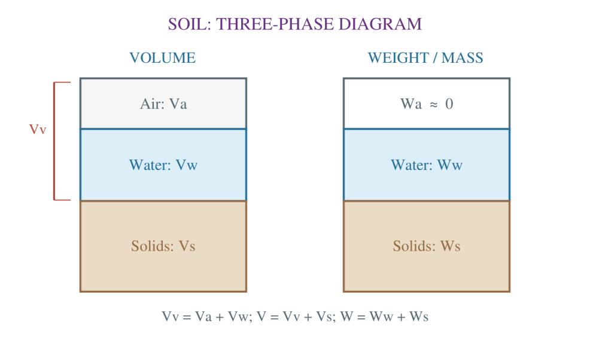
Three phases: V is volume and W is weight. Air weight is neglected.
V = Vs + Vw + Va; void volume Vv = Va + Vw. Total weight W ≈ Ws + Ww. Void ratio e = Vv/Vs; porosity n = Vv/V; degree of saturation Sr = Vw/Vv; water content w = Ww/Ws.
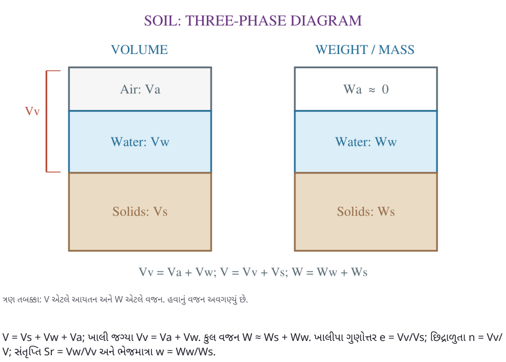
Q.1 (c) · Explain core cutter method for determination of density of soil. · 7 marks
A sharp steel cylindrical cutter of known internal volume is driven into suitable cohesive soil to obtain an approximately undisturbed in-place specimen.
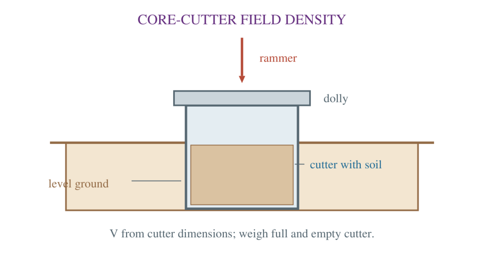
Field cutter, dolly and rammer; schematic.
1. Measure internal diameter D and height H; calculate V = πD²H/4. Weigh the clean, empty cutter M1.
2. Level the ground, seat the cutter with dolly and drive it vertically with the rammer. Avoid disturbing the soil inside.
3. Excavate around and lift it; carefully trim both faces flush and weigh cutter plus moist soil M2.
4. Bulk density ρ = (M2 − M1)/V. Take a representative piece, determine w = water mass / dry mass and compute ρd = ρ/(1 + w), with w decimal.
Repeat at representative points and report units and moisture. The method is unsuitable for very hard, gravelly or stony soil; loss or compression of the core biases the result.
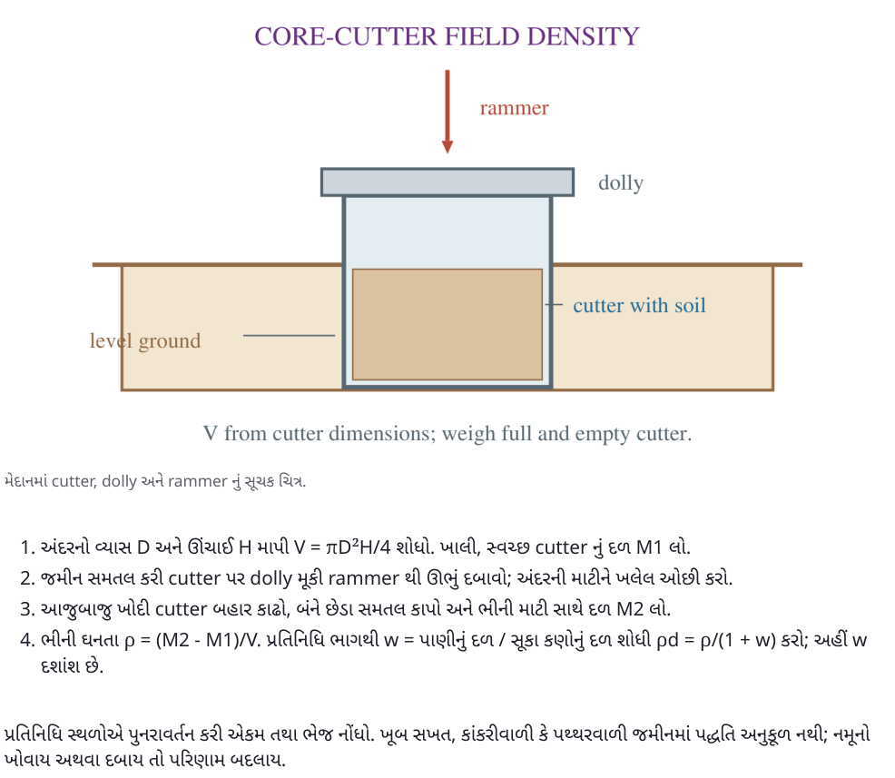
Q.1 (c) · A soil sample has bulk density 1.714 gm/cm3, water content 20% & specific gravity 2.7. Calculate dry density, void ratio & degree of saturation. · OR · 7 marks
Given bulk density ρ = 1.714 g/cm³, water content w = 0.20, Gs = 2.7. Assume ρw = 1.000 g/cm³ and use the same specimen volume throughout.
ρd = ρ/(1 + w) = 1.714/1.20 = 1.42833 g/cm³.
e = Gs ρw/ρd − 1 = 2.7/1.42833 − 1 = 0.89032.
Sr = w Gs/e = 0.20 × 2.7/0.89032 = 0.60653.
Dry density = 1.428 g/cm³; e = 0.890; degree of saturation ≈ 60.65%.
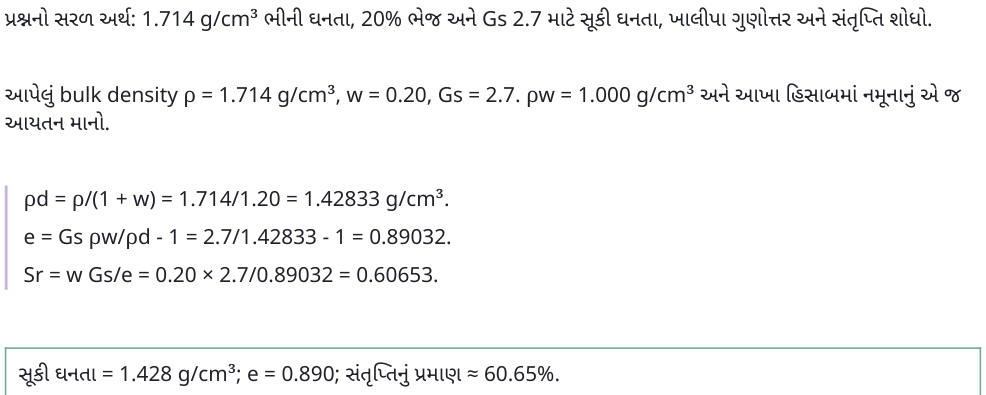
Question 2
Q2 · Soil classification and limits
Q.2 (a) · Give fundamental uses of soil. · 3 marks
• Natural foundation material carries buildings, bridges and other structures.
• Compacted soil forms embankments, earth dams, road subgrades, canal banks and backfill.
• Selected soils are used for liners, bricks and other earth construction; permeability also governs drainage.
Q.2 (b) · After test of soil sample following properties collected: (I) Liquid limit = 25% (II) Plastic limit = 15% (III) Effective grain size = 0.17mm (IV) 30% finer size = 0.38mm (V) 60% finer size = 0.75mm. Calculate uniformity coefficient & coefficient of curvature for a soil sample. · 4 marks
Effective size is D10 = 0.17 mm; D30 = 0.38 mm and D60 = 0.75 mm. LL and PL are not needed for these two coefficients.
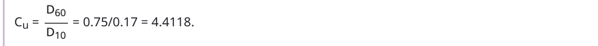
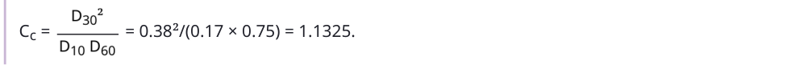
Cu ≈ 4.41; Cc ≈ 1.13 (both dimensionless).
Grading classification also requires the soil fraction and fines content; the two coefficients alone are not enough.
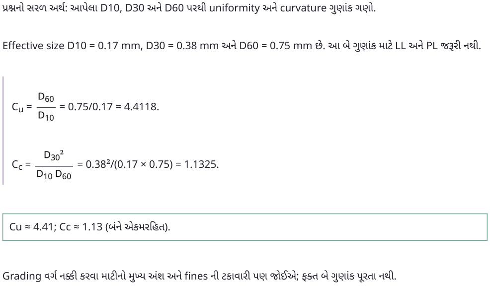
Q.2 (c) · Explain the method to find liquid limit of soil. · 7 marks
Liquid limit (LL) is the water content at the conventional boundary of plastic and liquid consistency. One standard method uses a Casagrande cup (IS 2720 Part 5).
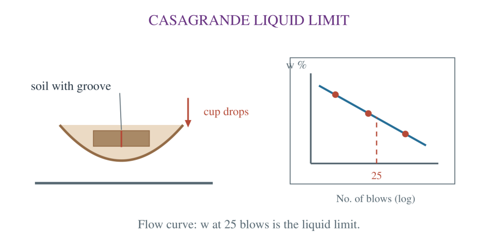
The flow curve is schematic; LL is read at 25 blows.
1. Prepare soil passing the 425 μm sieve; mix thoroughly with water to make a uniform paste.
2. Place paste in the cup to about 10 mm maximum depth and cut a clean standard groove through the centre.
3. Drop the cup about 10 mm at approximately two blows per second. Count blows N until the groove closes by flow for about 12.7–13 mm; avoid sliding of the whole pat.
4. Take soil from the closure for water content. Repeat at several water contents to obtain points on both sides of 25 blows.
5. Plot water content on the arithmetic axis versus N on the logarithmic axis; draw the flow line and read the water content at N = 25 as LL.
Use a calibrated device and report method and measured moisture; the figure and steps are a study summary, not a substitute for the current laboratory standard.
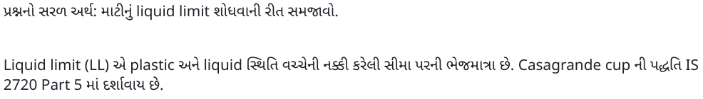
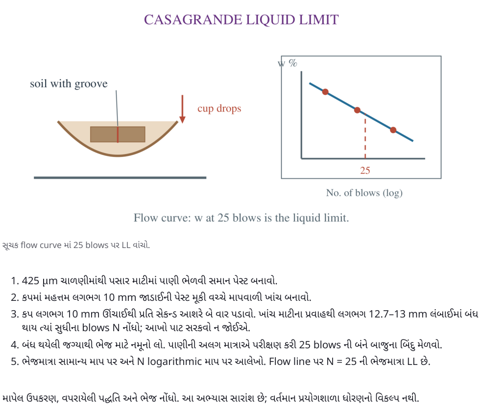
Q.2 (a) · Draw chart of Indian Standard classification for soil. · OR · 3 marks
Indian Standard classification uses grain-size distribution, plasticity and organic characteristics together; a size label alone is not a complete group symbol.
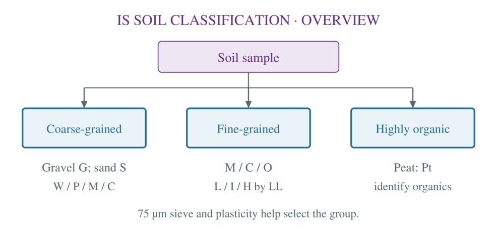
Main groups and symbols; consult the applicable standard for boundary cases.
• Coarse: at least half retained on 75 μm sieve. Gravel G or sand S is chosen from the coarse fraction using 4.75 mm; W/P denote well/poor grading and M/C denote silty/clayey fines. Examples are GW, GP, GM, GC and SW, SP, SM, SC.
• Fine: more than half passes 75 μm. Use LL and PI on the plasticity chart for M (silt), C (clay) or O (organic), with L, I, H for low, intermediate or high liquid limit. Typical groups include CL, CI, CH, ML, MI, MH, OL, OI and OH.
• Highly organic: peat Pt, identified by organic character. Borderline/dual symbols require additional rules.
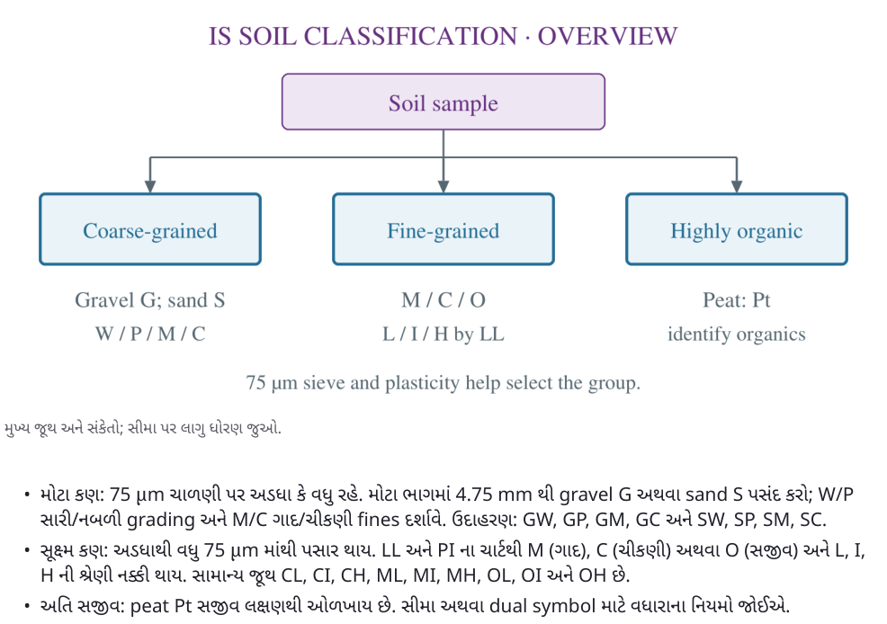
Q.2 (b) · A soil sample has water content 50%, liquid limit 55% and plastic limit 26%. Calculate plasticity index and liquidity index. · OR · 4 marks
Given w = 50%, LL = 55% and PL = 26%. Use percentage values consistently.
PI = LL − PL = 55 − 26 = 29 percentage points.
LI = (w − PL)/PI = (50 − 26)/29 = 24/29 = 0.8276.
Plasticity index = 29%; liquidity index ≈ 0.828.
LI is dimensionless; this water content lies between PL and LL.
Q.2 (c) · Explain and draw particle size distribution curve for soil. · OR · 7 marks
A particle-size distribution (gradation) curve shows cumulative percent by dry mass finer than a given diameter. Use a log diameter axis and a linear 0–100% finer axis.
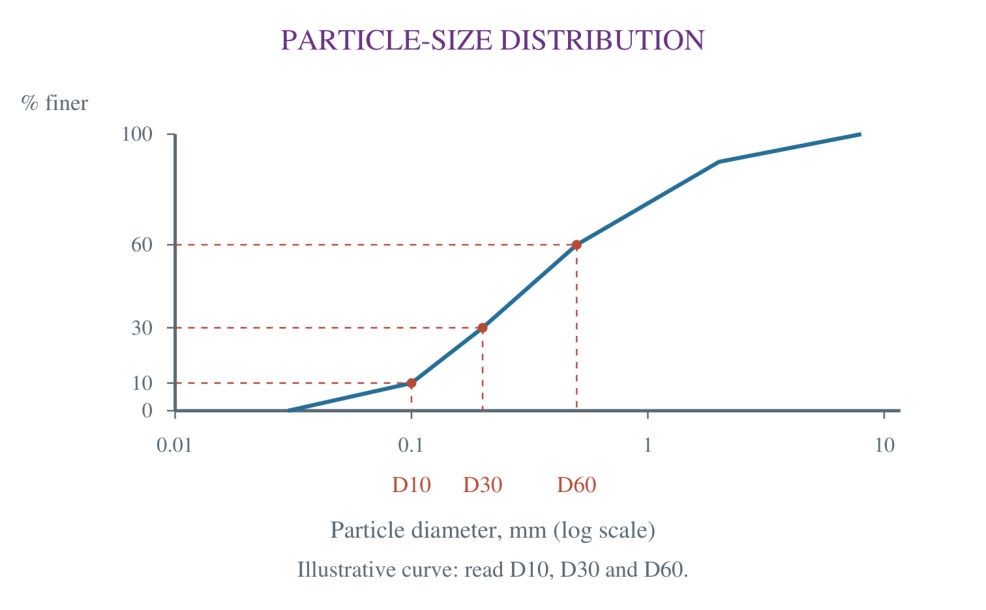
Illustrative PSD curve and readings D10, D30 and D60; not test data.
1. Dry and weigh a representative sample. Use sieves for coarse fractions and a suitable sedimentation method for fine fractions; find cumulative percent passing.
2. Plot percent finer against particle diameter on semi-log paper and join points smoothly.
3. At 10%, 30% and 60% finer, read D10, D30 and D60. D10 is the effective size.
4. Calculate Cu = D60/D10 and Cc = D30²/(D10 D60). A broad smooth curve often indicates a wider range of sizes; a steep curve indicates a more uniform size. Use the full IS criteria, including fines, before assigning a group.
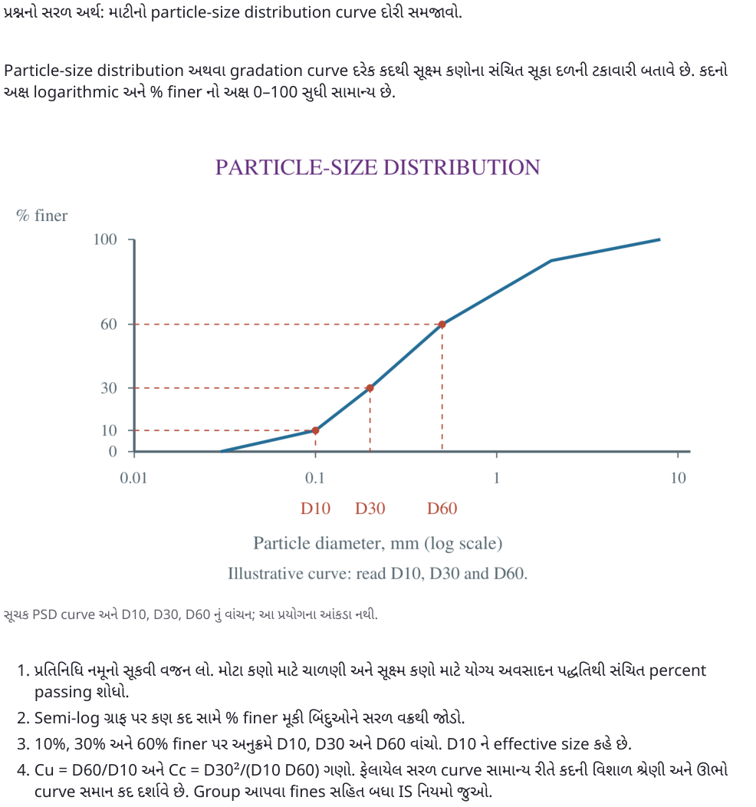
Question 3
Q3 · Compaction
Q.3 (a) · List out name of factors affecting compaction. · 3 marks
• Water content at placement.
• Soil type, grading, particle shape and plasticity.
• Compactive effort: rammer/roller energy, number of passes and lift thickness.
• Method of compaction: static pressure, kneading, impact or vibration; drainage and confinement can also matter.
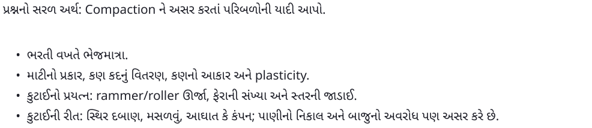
Q.3 (b) · Give difference of compaction and consolidation. · 4 marks
Both processes reduce soil volume, but their cause and expelled pore fluid differ.
![Q.3 (b): preserved source formula, table or diagram, page 14. Extracted text context (formula notation may be incomplete): Feature Compaction Consolidation Cause Mechanical effort, often impact or rolling Sustained load with drainage Pore fluid expelled Mainly air in the usual partially saturated fill Mainly water in saturated soil Rate Usually rapid Time-dependent; often slow in low-permeability clay Typical purpose / example Densify a placed earth layer Settlement of saturated clay under a building Moisture Moulding water often changes little during a short compaction operation Water content decreases as drainage proceeds](winter-2025.assets/0025.webp)
These are the usual idealisations: actual field soils and drainage conditions can vary.
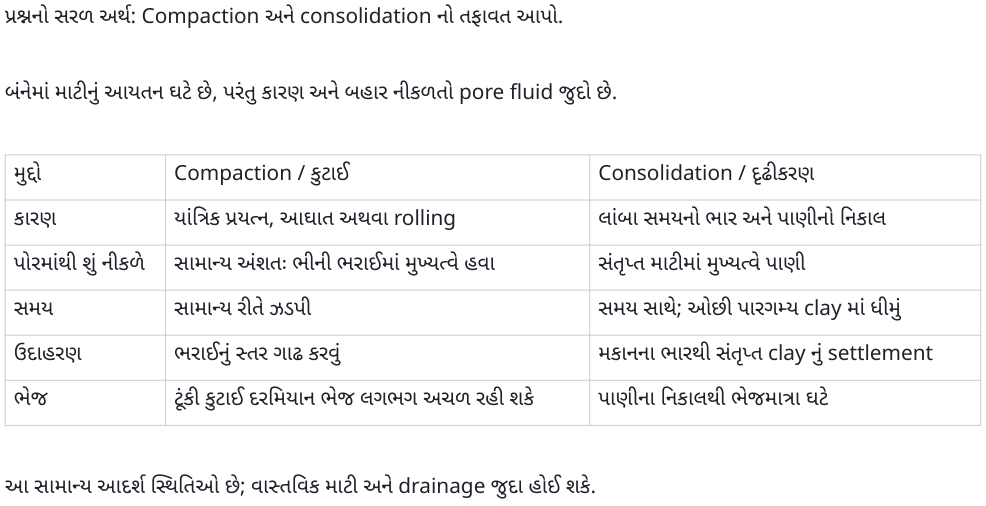
Q.3 (c) · Explain standard proctor test. · 7 marks
The IS light compaction test, similar to Standard Proctor, obtains the water-content/dry-density relation for a specified compactive effort; the peak defines OMC and MDD for that effort.

IS light test using the 1000 cm³ mould; layers are compacted bottom to top.
1. Prepare a representative soil sample according to the test procedure; determine the mould volume and the mass of the empty mould.
2. Mix a measured amount of water uniformly. Place the moist soil in a 1000 cm³ mould in three approximately equal layers.
3. Compact each layer uniformly with 25 blows of a 2.6 kg rammer falling freely through 310 mm. Scarify the layer surface as specified before placing the next layer.
4. Remove collar; trim the top flush. Weigh the mould and compacted soil, calculate bulk density ρ = wet soil mass / mould volume and measure actual water content w.
5. Calculate ρd = ρ/(1 + w), with w in decimal. Repeat for several water contents bracketing the peak; plot ρd against w and read the peak MDD and corresponding OMC.
Keep soil preparation and effort consistent; MDD is not a universal density. Compare field dry density only with the specified reference test and use the current standard for detailed practice.
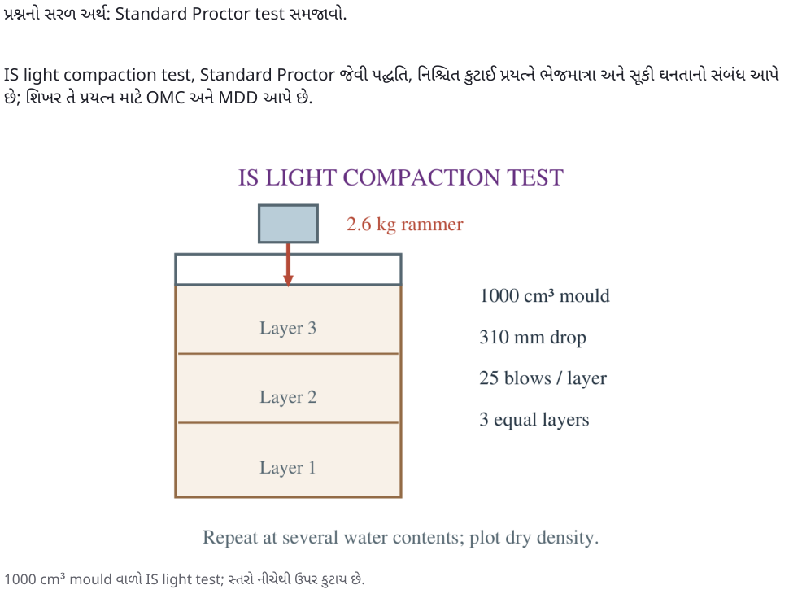
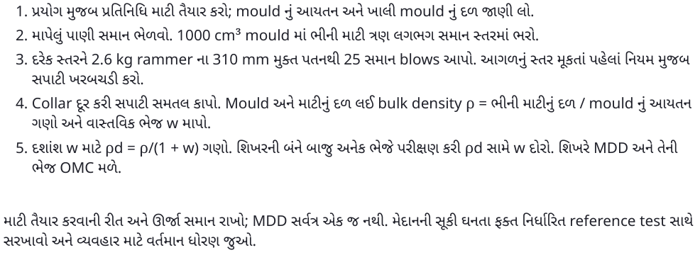
Q.3 (a) · Give name of methods of compaction in the field. · OR · 3 marks
• Static rolling: smooth-wheel rollers apply pressure, useful on suitable granular lifts and finishing.
• Kneading: sheepsfoot or pneumatic-tyred rollers work appropriate cohesive soils.
• Vibration: vibratory rollers/plates rearrange sands and granular fill; impact: rammers or tampers help in confined areas.
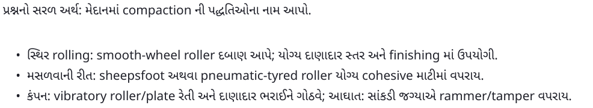
Q.3 (b) · Classify effects of compaction on the properties of soil. · OR · 4 marks
• At a fixed water content, suitable added compactive effort generally reduces air voids and increases dry density.
• Strength and bearing resistance often increase, and later compression/settlement often decreases, but both depend on soil and water content.
• Hydraulic conductivity of compacted fine soil often decreases as voids close; structure and wet/ dry side of optimum can change the trend.
• Expansive soils compacted dry may swell on wetting; compaction alone is not proof of stability or uniformity.
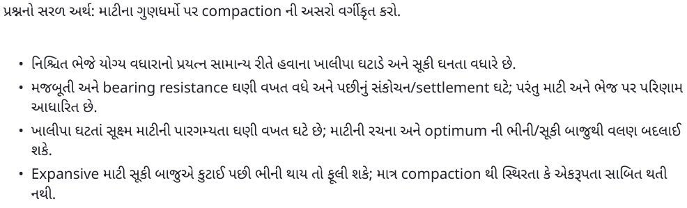
Q.3 (c) · The following observation were made in a proctor compaction test, Water content 08% 10% 12% 15% Bulk Density 2.20 Mg/m3 2.40 Mg/m3 2.50 Mg/m3 2.30 Mg/m3 Calculate optimum moisture content (OMC) & maximum dry density (MDD) from graph. · OR · 7 marks
Convert each given bulk density to dry density at its own water content: ρd = ρbulk/(1 + w), where w is a decimal. The units are Mg/m³.
w (%) Bulk density Dry density
8 2.20 2.20/1.08 = 2.0370
10 2.40 2.40/1.10 = 2.1818
12 2.50 2.50/1.12 = 2.2321
15 2.30 2.30/1.15 = 2.0000
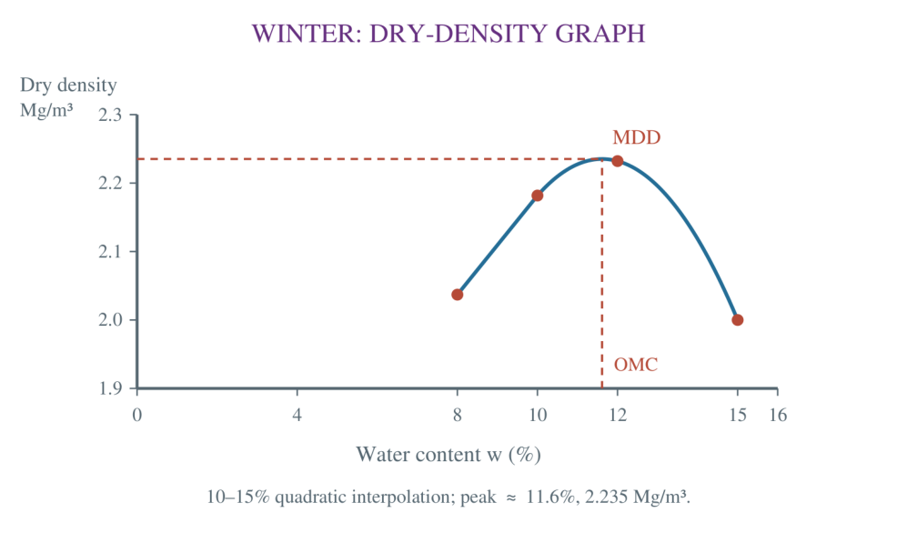
Red dots are calculated data. The displayed curve uses a 10–15% quadratic and a straight segment from 8–10%.
The highest measured dry density is 2.2321 Mg/m³ at 12%. As one reproducible graph, a parabola through the 10%, 12% and 15% points peaks at approximately 11.61% and 2.2352 Mg/m³. A hand- drawn smooth curve can give a slightly different peak; four points do not determine a unique curve.
Graph estimate: OMC ≈ 11.6–12%; MDD ≈ 2.23–2.24 Mg/m³. Highest tested point: 12%, 2.232 Mg/ m³.
Quality check: Gs is not given. At 12% with ρw = 1 Mg/m³, physical saturation Sr ≤ 100% requires Gs ≥ 3.049; with an illustrative Gs = 2.65 the zero-air-voids density is only 2.011 Mg/m³. Therefore verify Gs and measurements before using these unusually high data; impossibility cannot be concluded without Gs.
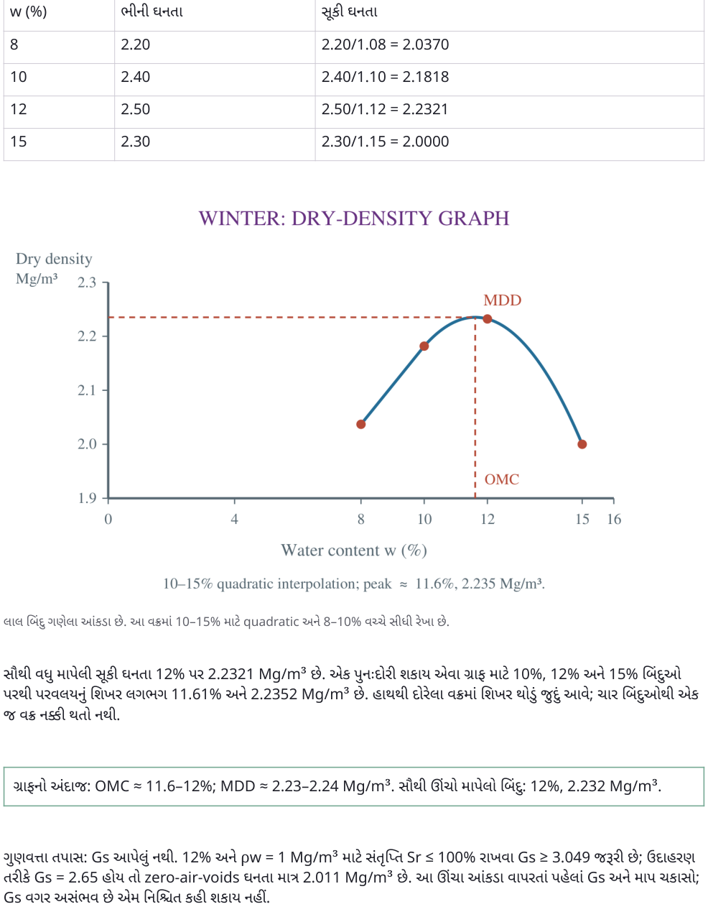
Question 4
Q4 · Permeability and shear strength
Q.4 (a) · Describe importance of permeability in civil engineering. · 3 marks
• Estimate seepage through earth dams, embankments and foundations, and the resulting water loss.
• Design drainage, filters, dewatering and excavation control; check uplift and piping risks.
• Understand pore-pressure dissipation and the rate of consolidation/settlement in saturated soil.
• Assess infiltration and movement of groundwater or contaminants.
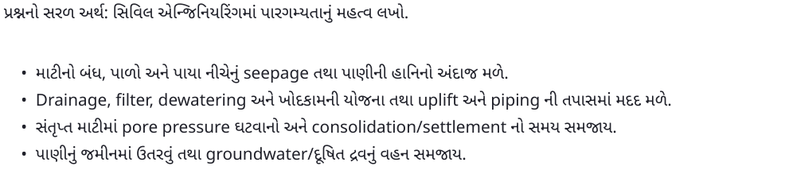
Q.4 (b) · Define cohesion, internal friction, shear strength and angle of repose. · 4 marks
• Cohesion c: intercept of the adopted Mohr–Coulomb shear-strength envelope on the shear- stress axis; distinguish effective c′ from total-stress c.
• Internal friction: resistance to sliding/rolling and rearrangement of soil particles under normal stress.
• Shear strength τf: shear stress at failure for the stated stress and drainage conditions.
• Angle of repose: angle of a stable, freely formed soil heap to horizontal. Its equality to friction angle is only an ideal granular approximation.
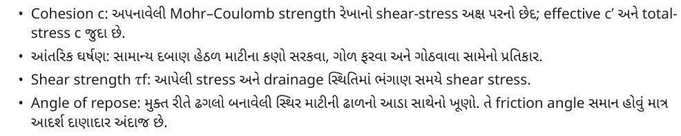
Q.4 (c) · Explain factors affecting Permeability in soil. · 7 marks
• Grain size and grading: larger interconnected pores generally permit faster flow; fines can fill the pores.
• Void ratio and compaction: smaller interconnected voids usually lower conductivity, other things equal.
• Structure / stratification: pore connectivity, fissures and flow direction make permeability anisotropic.
• Saturation and entrapped air: air blocks flow paths; test conditions must be stated.
• Fluid and temperature: viscosity and density change hydraulic conductivity; warm water is less viscous.
• Mineralogy and adsorbed water: clay surfaces, pore-fluid chemistry and fabric influence fine- soil flow.
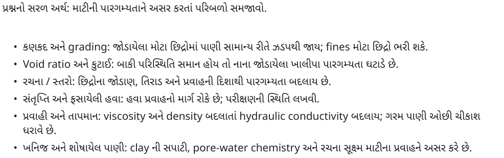
Q.4 (a) · Define permeability, seepage and piping failure. · OR · 3 marks
• Permeability: ability of soil to transmit a fluid through connected pores; hydraulic conductivity k has units of length/time.
• Seepage: movement of pore water through soil under a hydraulic-head difference.
• Piping: progressive internal erosion when seepage dislodges and carries soil particles, creating channels; a filter and seepage-control design reduce risk.
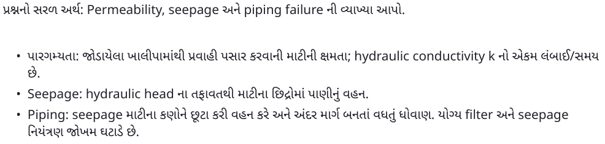
Q.4 (b) · List out name of tests used to determine shear strength of soil in laboratory. · OR · 4 marks
Laboratory shear-strength tests include:
• Direct or box shear test.
• Triaxial compression tests (UU, CU or CD according to consolidation/drainage).
• Unconfined compression test, especially for suitable cohesive specimens.
• Laboratory vane shear and ring shear tests for appropriate materials and purposes.
The obtained strength parameters depend on drainage, normal stress and specimen condition.
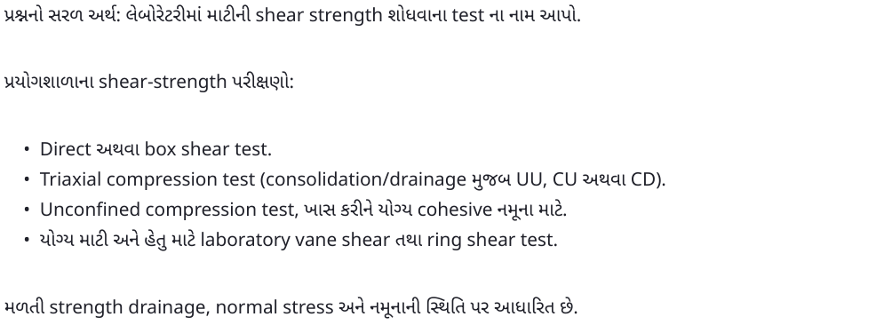
Q.4 (c) · During permeability test of soil in laboratory following observations were recorded: Inside diameter of permeameter = 100mm, L=128mm. Inside diameter of stand pipe = 10mm. Head of water decrease from 150 mm to 110 mm in 30minutes. Calculate permeability of soil. · OR · 7 marks
A decreasing standpipe head indicates the falling-head test. Assume saturated specimen, Darcy flow, no leakage and head measured above the outlet datum.
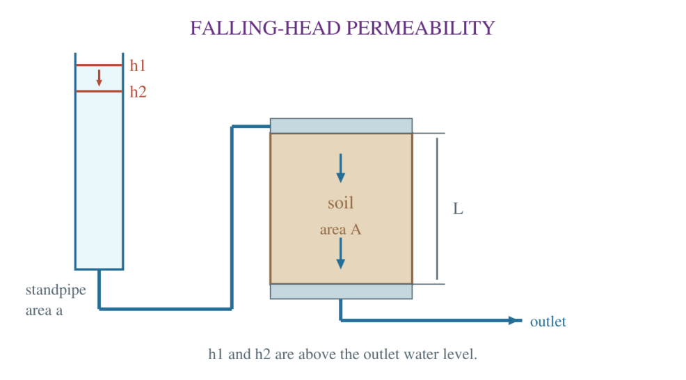
Schematic falling-head arrangement. h1 and h2 refer to the same outlet level.
Specimen A = π(100)²/4 = 7853.982 mm²; standpipe a = π(10)²/4 = 78.540 mm²; a/A = 0.01.
L = 128 mm; h1 = 150 mm; h2 = 110 mm; t = 30 × 60 = 1800 s.
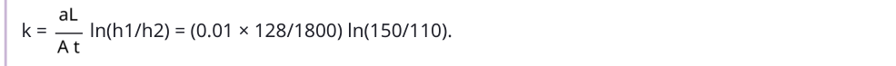
k = 0.00022055 mm/s = 2.2055 × 10⁻⁷ m/s = 2.2055 × 10⁻⁵ cm/s.
Hydraulic conductivity k ≈ 2.21 × 10⁻⁷ m/s.
The logarithm above is natural log. With common log, multiply log10(h1/h2) by 2.303 instead.
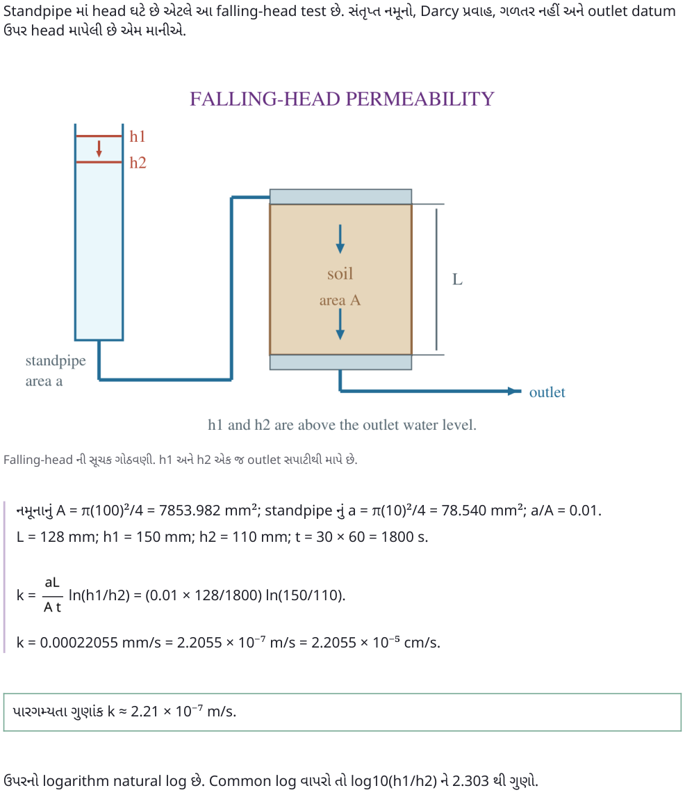
Question 5
Q5 · Exploration and foundations
Q.5 (a) · Calculate shear strength of frictionless cohesive soil having value of C = 8.5 N/ mm2. · 3 marks
Given cohesion c = 8.5 N/mm² and a frictionless idealisation φ = 0°. Use Coulomb shear strength at failure for the same stress basis.
τf = c + σn tan φ = 8.5 + σn tan 0° = 8.5 N/mm².
1 N/mm² = 1000 kPa; 8.5 N/mm² = 8500 kPa.
Shear strength = 8.5 N/mm² = 8500 kPa.
This is the unusually large value and unit printed in the paper; verify the source before using it in practice.
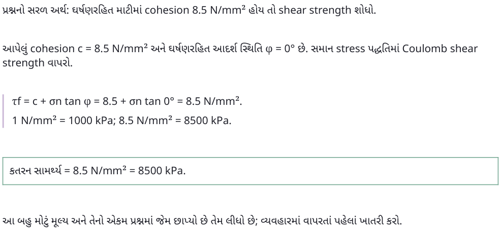
Q.5 (b) · Summarize objectives of site exploration. · 4 marks
• Establish soil and rock layer sequence, thickness and lateral variation at the proposed site.
• Locate groundwater level and possible seasonal changes; identify seepage, cavities or weak/ problematic strata.
• Obtain representative disturbed and relatively undisturbed samples and in-situ/laboratory test data for strength, compressibility and permeability.
• Select foundation type/depth, estimate bearing and settlement, plan excavation/ground improvement, and reduce uncertainty and construction risk.
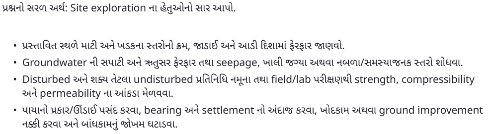
Q.5 (c) · Differentiate between general & local shear failure in soil. · 7 marks
General and local shear describe idealised failure modes beneath a loaded footing; the actual mode depends on density, compressibility, stress level and geometry.
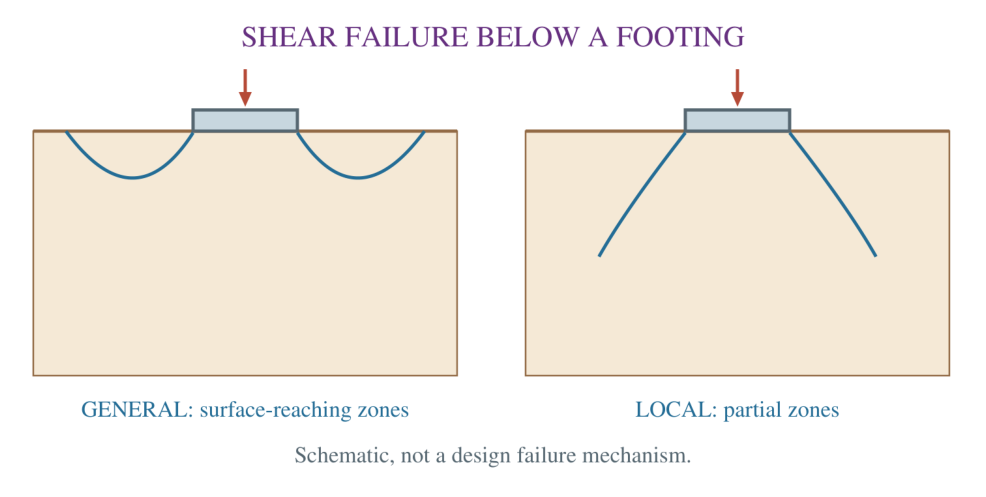
General zones reach the ground surface; local zones are only partly developed.
Feature General shear Local shear
Typical soil Dense sand or stiff clay Medium/loose sand or softer, compressible clay
Failure zones Well-developed and reach ground surface
Partly developed and less distinct
Surface Noticeable bulging/heave may occur Little or less distinct surface heave
Load– settlement
Clear peak or sudden failure at relatively small movement
Progressive yield, no sharp peak; larger settlement
Interpretation Ultimate load more clearly defined Settlement often governs before clear collapse
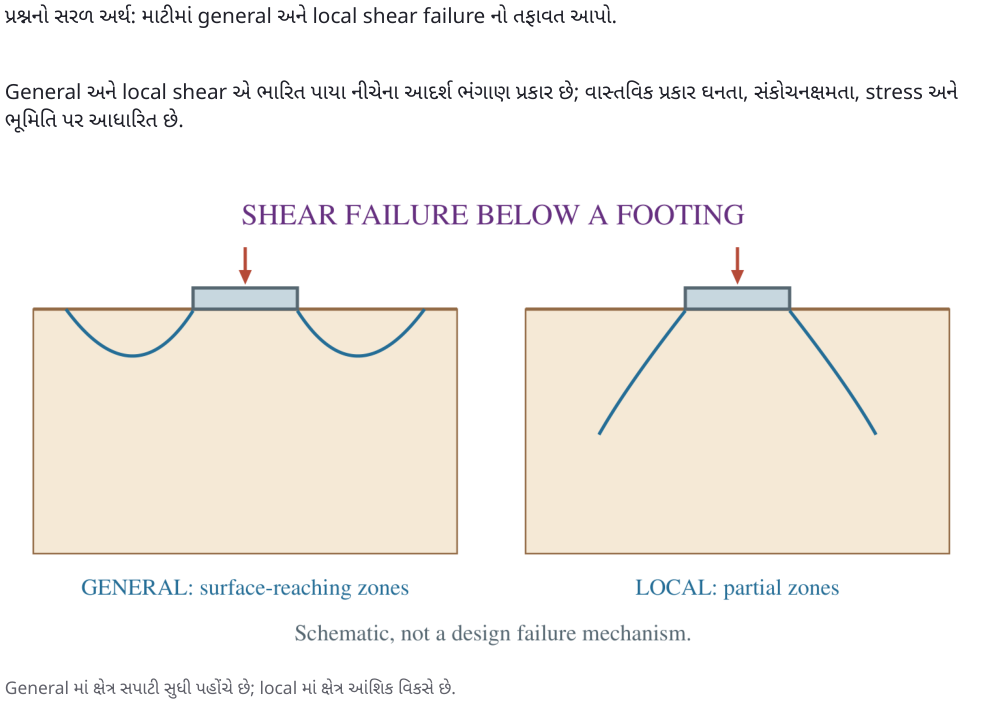

Q.5 (a) · Describe soil samples in field. · OR · 3 marks
• Disturbed: natural structure is altered, but a representative sample can identify soil and determine grain size or limits; collect with auger, shovel or split spoon as suitable.
• Relatively undisturbed: thin-wall tube or block sample preserves structure and water content as far as practicable for strength/consolidation tests; no sample is perfectly undisturbed.
• Label location, depth, date and orientation where relevant; seal promptly, protect from vibration and transport carefully.
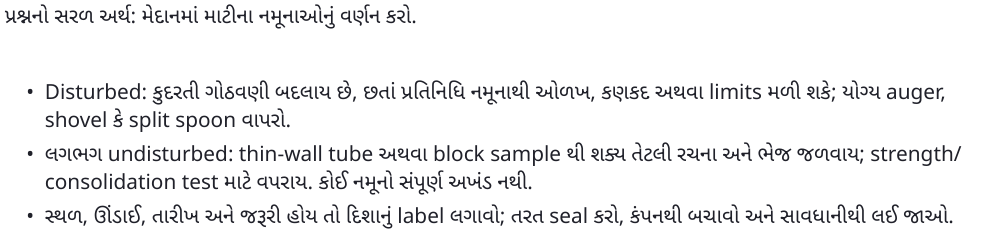
Q.5 (b) · Define lateral earth pressure and give name of its types. · OR · 4 marks
Lateral earth pressure is the horizontal stress/pressure exerted by soil against a retaining wall or similar support.
• At rest: wall has essentially no lateral movement (K₀ condition).
• Active: sufficient movement away from backfill mobilises the active state.
• Passive: sufficient movement towards the soil mobilises passive resistance.
Movement, drainage, backfill and surcharge matter; water pressure is checked separately.
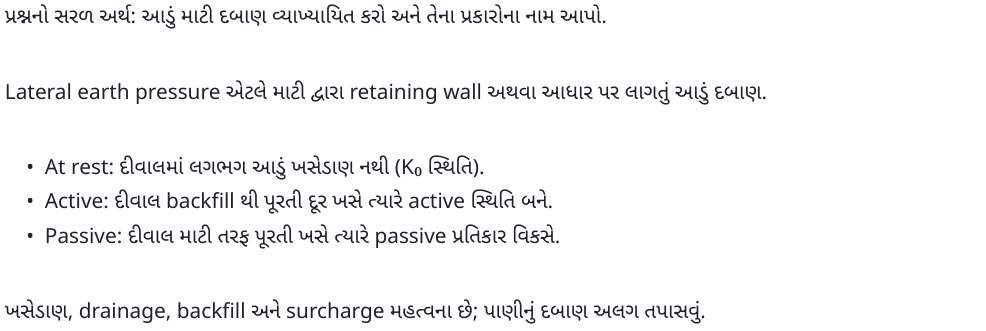
Q.5 (c) · Enlist types of shallow and deep foundations and draw sketch of strap footing. · OR · 7 marks
Shallow foundation types include isolated/pad, strip or wall, combined, strap and raft/mat footings. Deep types include piles, drilled piers and well/caisson foundations.
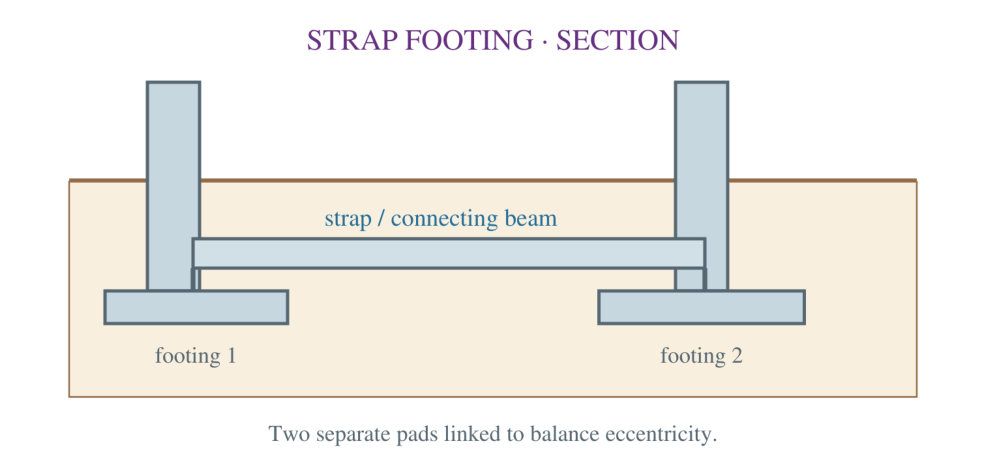
Strap footing: two separate pads connected by a beam; not a single combined slab.
A strap connects an eccentric exterior pad to an interior pad to balance moments and distribute column reactions. The connecting beam is normally designed to transfer forces between pads rather than relying on soil pressure under it; project-specific structural and geotechnical design is required.
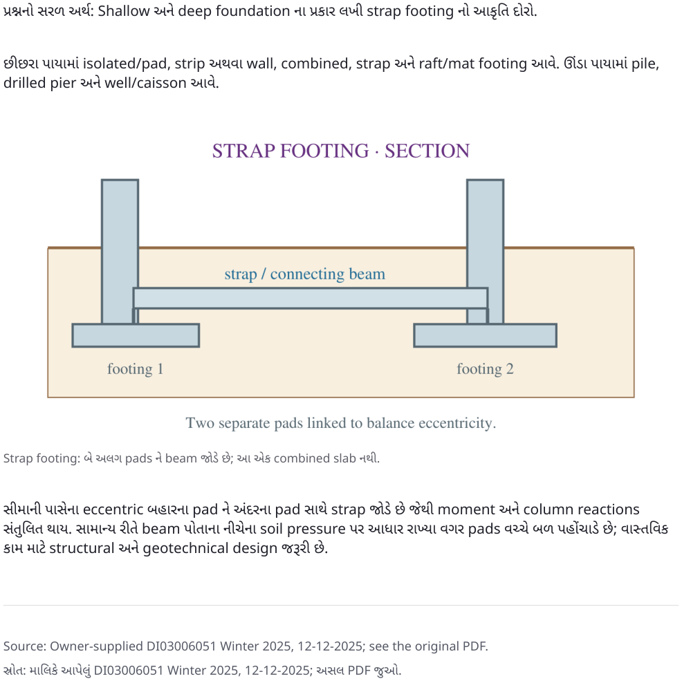